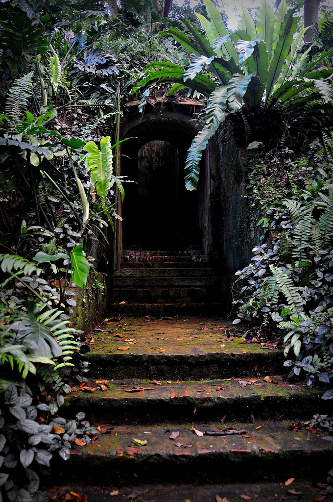
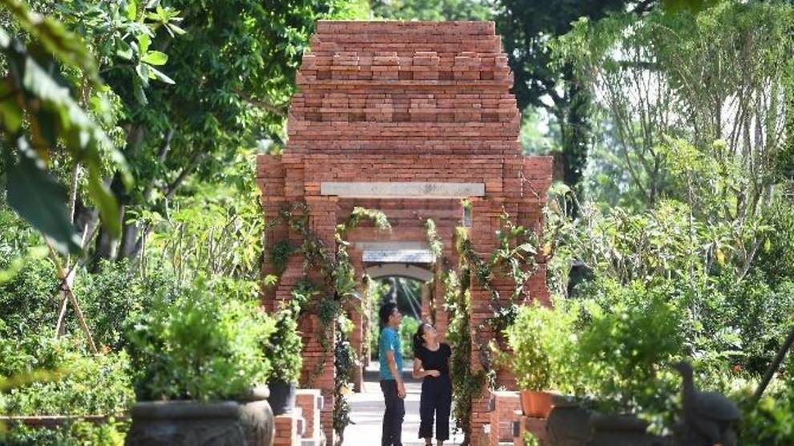

Fort Canning Park
River Valley Road, Singapore
Located in the heart of the the central business district, Fort Canning Park provides a escape from the skyscrapers and buildings in the city. Fort Canning park is a family friendly environment that exposes visitors to both nature and Singapore's history and culture.
HISTORY
Temasek Singapore
Prior to colonial Singapore, Fort Canning was known as Bukit Larangan or Forbidden Hill. It is believed that ancient Singapore kings were buried there, and that the hill is haunted. There was once a palace built on the hill, and subsequently a settlment named Ban Zu in the 14th century.
Likely a translation from the Malay word pancur, Ban Zu means a spring or stream. There used to be a spring west of the hill, called pancur larangan or "forbidden spring", where the women of the ruler's household were said to bathe. Later in the 19th Century, this same spring was the main water source for ships that stopped over. However, the demand overpowered the supply and the spring dried up.
Early Colonial Singapore
As Sir Stamford Raffles settled in Singapore, he built his residence on the hill, sharing it with other governments and government officials, making it known as Government Hill. It was where Temenggong Abdul Rahman and Sultan Hussein signed the Treaty of Friendship and Alliance with the British Government, handing governance of Singapore to the British.
The hill was known as the Singapore Hill, where the first British Settlement was set up. In 1822, Raffles established the first Botanical Gardens on that same grounds, however, gardening experiments failed and was abandoned in 1829.
A Christian cemetery used to exist on the hill, serving as the burial ground for early Europeans in Singapore. Two classical monuments, and some headstones placed along brick walls remained at the site. Tombs were exhumed, and the tombstones were embedded into surviving walls.
Military Singapore
By 1859, due to the absence of harbour defence, the hill served a military role. The residence was demolished, and a fort with an arms store, barracks and a hospital was built. The fort was renamed Fort Canning after Viscount Charles John Canning, then Governor-General and the first Viceroy of India. Despite the seven 68-pounders, eight 8-inch shell guns and two 13-inch shell guns that were added, the fortifications were rendered useless and demolished, as attacking ships were out of range.
A military headquarters - Headquarters Malaya Command Operations Bunker - was then built with underground rooms serving as operations centre. This was where Lieutenant-General Arthur Ernest Percival surrendered Singapore to the Japanese in 1942.
Historical Highlights
Fort Canning Reservoir
The Fort Canning Service Reservoir was built on top the hill on the site of a former barrack and parade ground of the demolished fort. A cache of Javanese-style gold jewelry dating to the mid-14th century was found during excavation. Currently, the reservoir is covered and restricted access.

Van Kleef Aqaurium
Constructed in 1955, at the foot of Fort Canning, the aquarium was the first of its kind in South-East Asia. It attracted around 400,000 visitors yearly by the 1970s. But due to the introduction of newer attractions, visitor count declined in 1980, and was closed in 1991. Attempts were made to renew Van Kleef Aqaurium, but there was no success. Closed in 1996, the building was demolished in 1998.
National Theatre
The National Theatre, also known as the People's Theatre, was built near the Van Kleef Aquarium, on the western slope of the hill. Opened on 8 August 1963, the theatre hosted many events, ranging from international performances,universities' convocations and National Day rallies. Unfortunately, in 1986, it was demolished to make way for the Central Expressway.
Current Highlights
The Battle Box
The Underground Far East Command Centre (or The Battle Box) is the underground bunkers used by Lieutenant General Arthur Ernest Percival (Commander of British Forces) during World War II as his commanding base. This was also where he surrendered to the Japanese

Sally Port
The sally port is a small hidden door that leads in and out the fort, allowing occupants to escape undetected. Fort Canning had at least three of these sally ports, but only one remains today.

Gothic Gate
An imposing gothic style gateways lead visitors into Fort Canning Green, where a Christian cemetery once stood. The landmark of Fort Canning Hill was built in 1846. Inscribed on the gate, the letters "IHS" are the first three letters of Jeses in Greek.
Spice Garden
A replica of the first experimental botanical garden established by Sir Stamford Raffles. Sent from Bencoolen, clove plants and nutmeg seeds were used in attempts to develop Singapore's agriculture.
Fort Canning Green
Once a graveyard for about 600 Christian graves, Fort Canning Green often hosts outdoor concerts and carnivals, capitalising on the natural slope of the hill. Only a few graves remain at the far end of the Green. Some tombstones removed were set into the surrounding walls.
Raffles House
Sir Stamford Raffles built his house on Government on his third and last visit to Singapore. Contrary to the present brick and tile structure, the original house was a wood and atap bungalow.

Things to do here
Take a tour
Rich in history through several periods in Singapore, learn more about Singapore by joining one of the many tours at Fort Canning that spanning across multiple disciplines - nature, history, art.
Tours: Spice Garden Tour, Heritage on the Hill Top, Sculpture Tour & Trees of the Fort Tour
Sightseeing
Filled with nature, colonial architecture and historical monuments, Fort Canning is a peaceful escape from the hectic citylife. Instead of joining a tour, explore the hill independently and uncover hidden gems. Let children explore the outdoors and learn about Singapore.

Channel your inner artist
Equipped with a sketchbook, some paint, or even just a camera, take in the beauty of the unique fusion of colonial architecture, military sites and tropical greenery through your own lense. Embrace the rich history of the hill and the humble flora and fauna that coexists with it.
Enjoy events
Known for hosting many events, such as Ballet Under the Stars, concerts and movie screenings, plan your visit to patronise one of Fort Canning's events with friends and family, and enjoy the atmosphere.
Getting here
by mrt
Fort Canning Station (Downtown line)
Take Exit B, 3 minute walk
Clarke Quay Station (North East line)
Take Exit E, 5 minute walk
Dhoby Ghaut Station (North South, Circle and East West lines)
Take Exit B, 5 minute walk